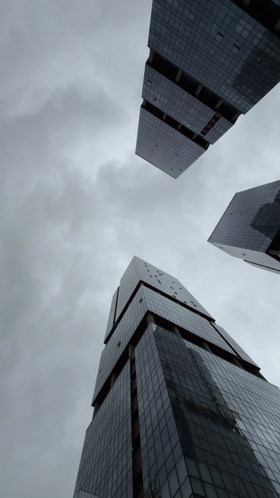
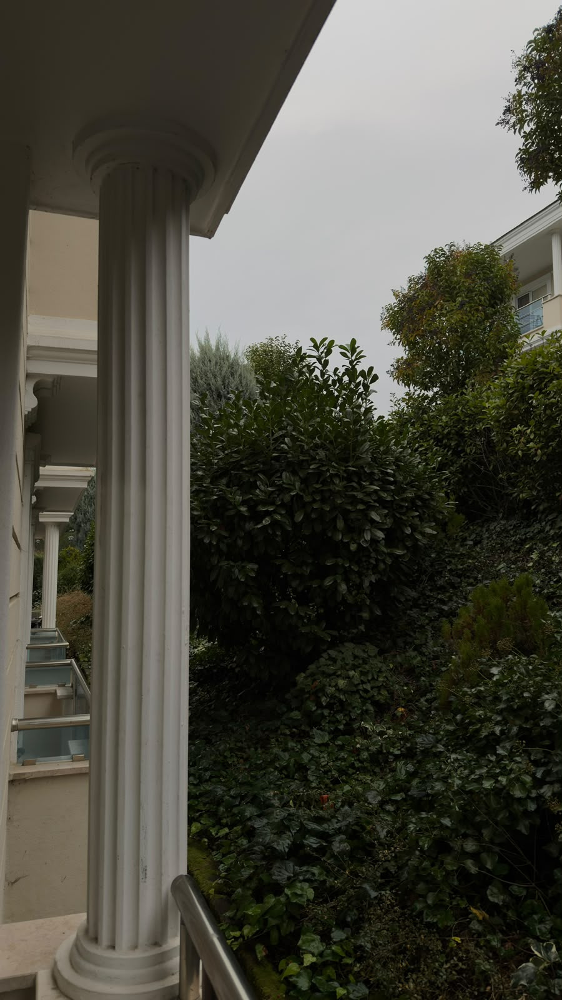
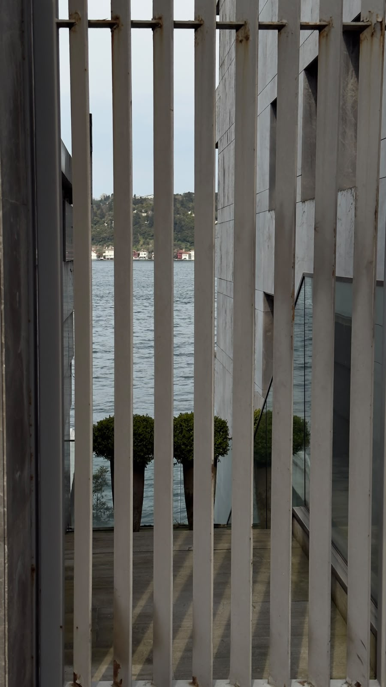
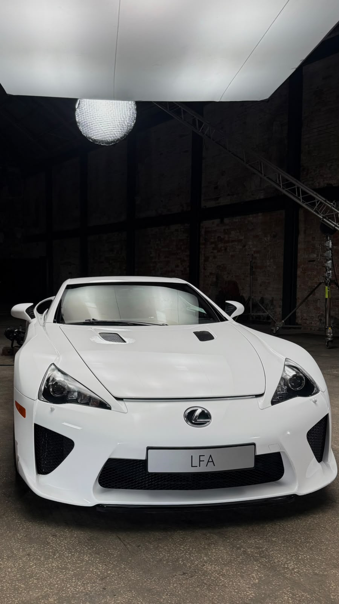
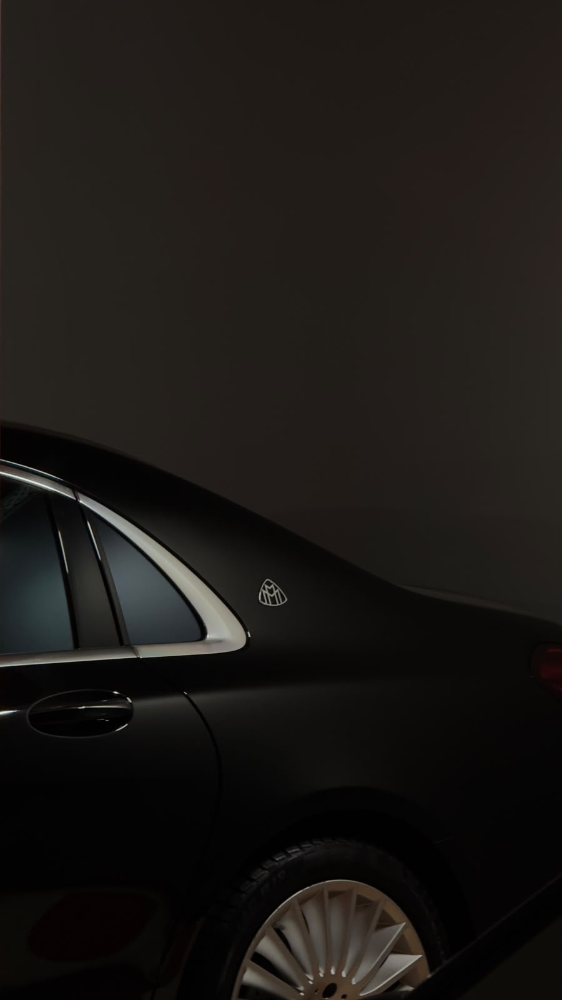
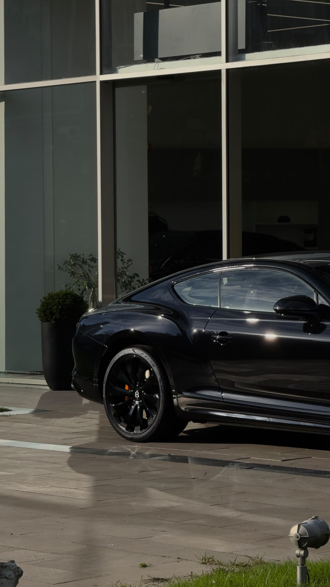
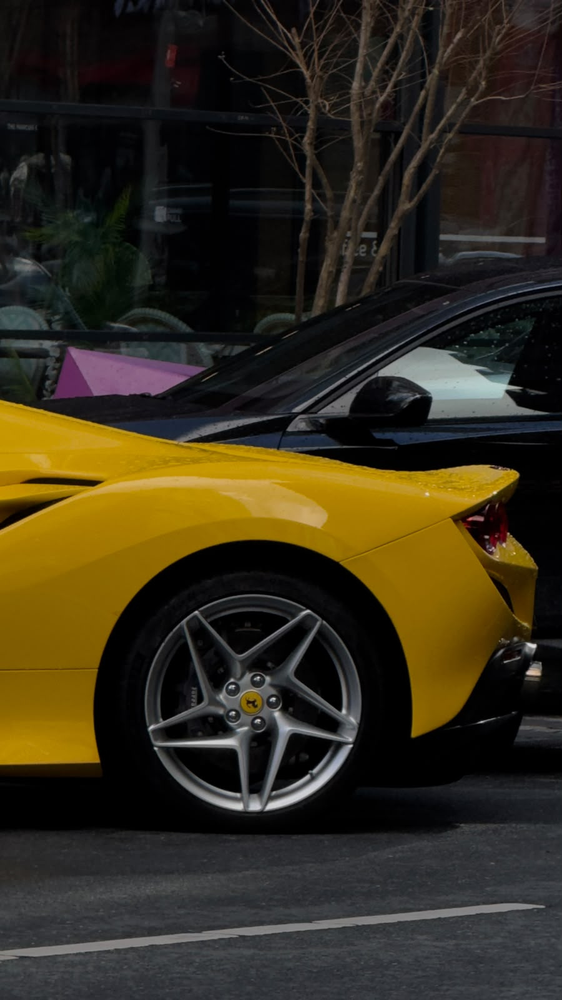
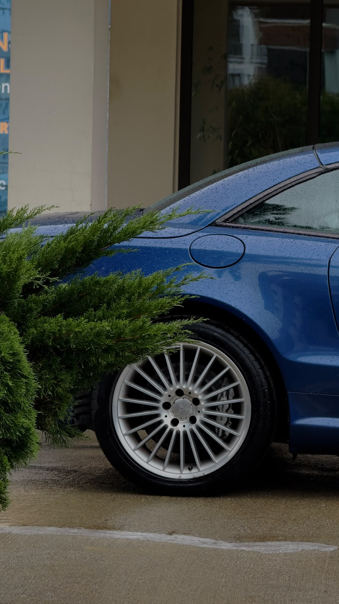
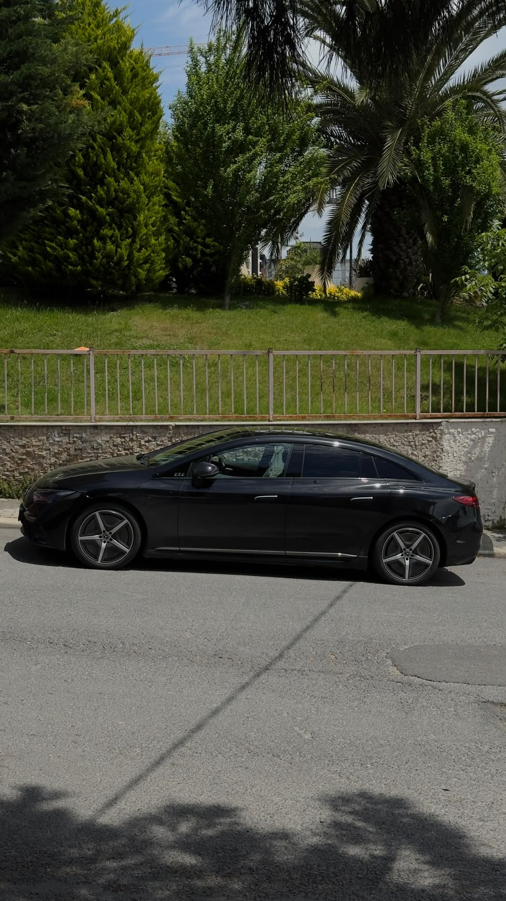
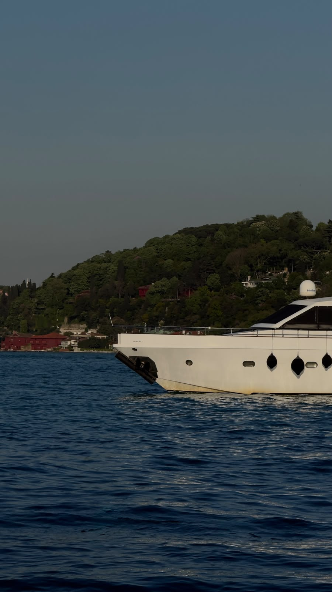

Fotoğraf arşivi / Seçili kareler
Her görsel tek bir öğeyi değil; ışık, ölçek, ritim ve kadraj arasındaki ilişkiyi kayda alır. Çalışmalar konu başlıklarına göre düzenlenmiştir.
01 / MİMARİ & MEKÂN
Mimari yüzeyler ve çevrenin ritmi. Keskin çizgiler, doğal doku ve boşluk.



02 / OTOMOBİL & FORM
Gövde kıvrımları, yüzey yansımaları ve otomotiv detaylarının oluşturduğu görsel dil.






03 / BOĞAZ & NESNELER
Suyun, kıyının ve günlük nesnelerin farklı ölçeklerde bıraktığı iz.

Arşiv dizini
Bu sayfada yer alan seçili karelerin kısa indeksi.
| No. | Kare | Odak |
|---|---|---|
| 01 | Lexus LFA | Mobilite / Form |
| 02 | Siyahın anatomisi | Mobilite / Detay |
| 03 | Siyah gövde | Mobilite / Form |
| 04 | Çerçevenin ötesi | Mekân / Çizgi |
| 05 | Şişeler ve ışık | Detay / Nesne |
| 06 | Bir renk aksanı | Mobilite / Renk |
| 07 | Göğe doğru | Mimari / Perspektif |
| 08 | Yağmur sonrası | Mobilite / Detay |
| 09 | Sessiz geçiş | Mekân / Doku |
| 10 | Yol kenarı | Mobilite / Form |
| 11 | Suyun ritmi | Mekân / Işık |